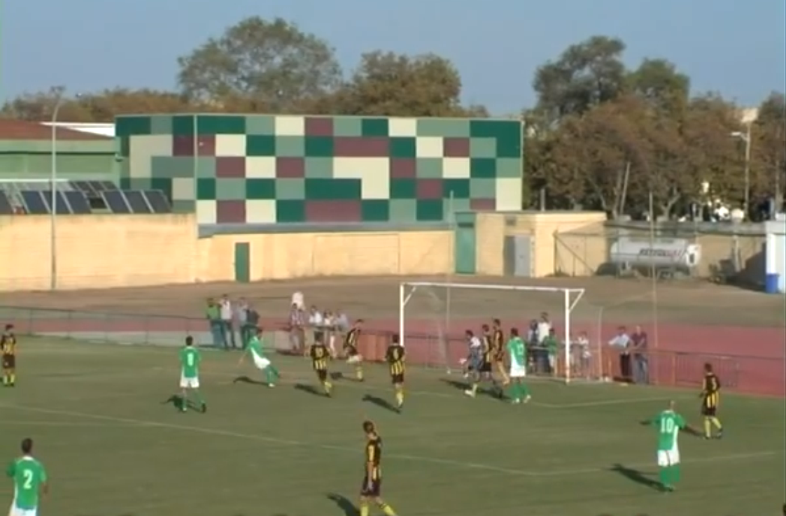
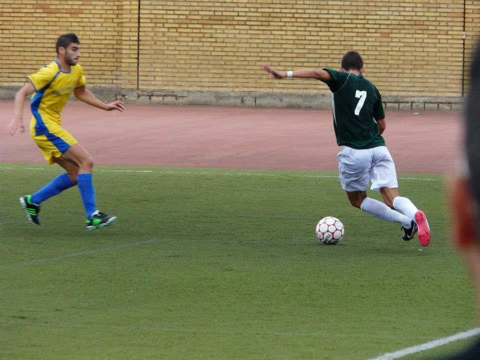
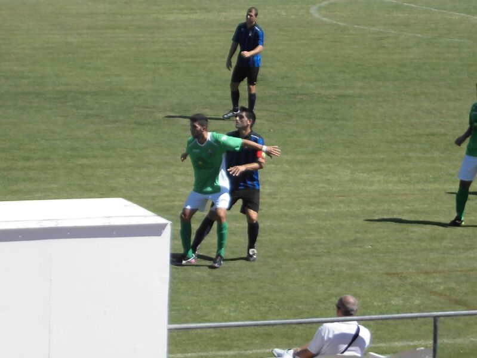
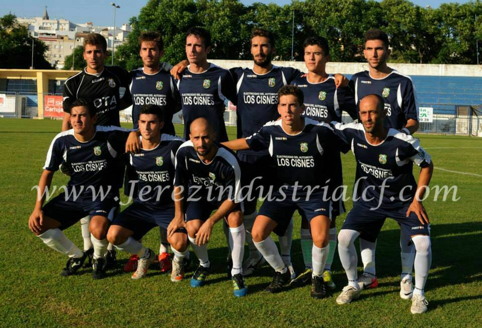
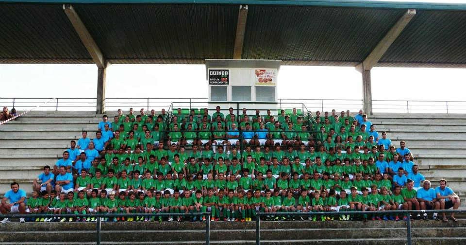
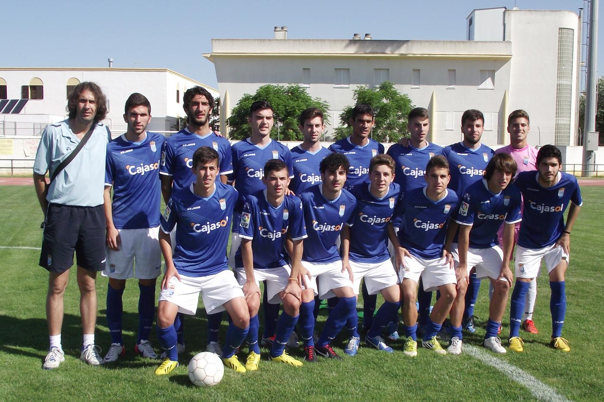
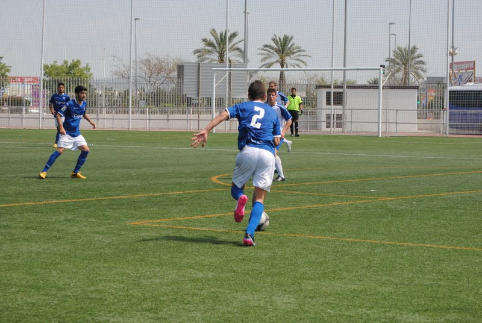
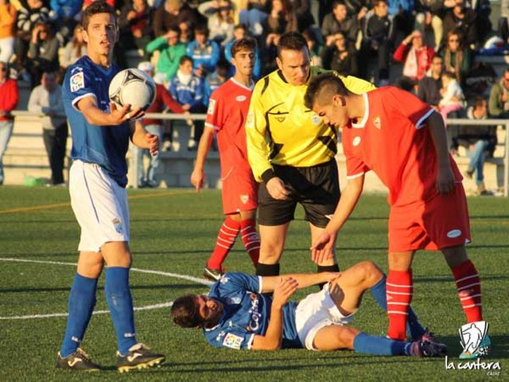
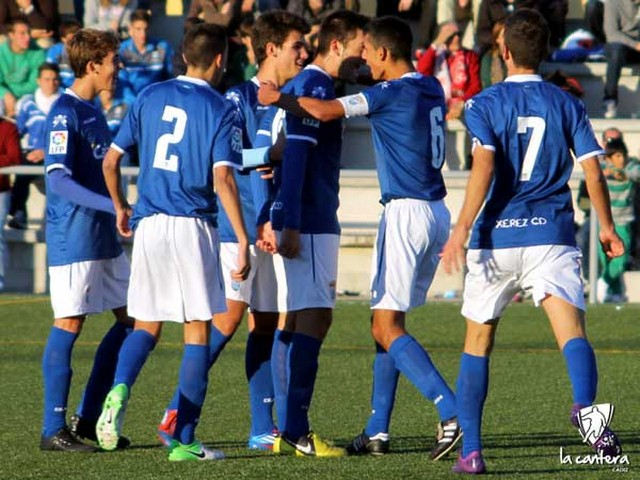

Noticias
Segunda victoria consecutiva y con buen fútbol

Gran ambiente en las gradas del Navarro Flores para disputar el cuarto partido de liga ante el Bazán. Se vió un CD Rota que dominó de principio a fin el partido, aunque los visitantes tuvieron varias ocasiones claras que no supieron aprovechar. Nos vamos al descanso con un empate a cero.
Tras la reanudación entra al campo Daniel Reales y le dá al equipo vida tras realizar varias jugadas muy buenas por la banda izquierda, en la cuál una de ellas pitó penalti. Se anularon dos goles que debieron subir al marcador.
Resultado final 3-0.
Gran partido de un CD Rota que aspira a estar entre los tres primeros. Hoy se ha podido disfrutar de un gran partido, esperemos que la semana que viene sea igual o mejor.
6 octubre 2013
Primera victoria fuera de casa ante un equipo muy correoso

Buen ambiente en Huelva para contemplar el tercer partido de liga, donde los dos equipos salieron muy enchufados. El Aljaraque se quedó a los 20 minutos de partido con un jugador menos, por desmenospreciar al linier. A raíz de aquí el CD Rota se adelante en un fallo del portero visitante al no lograr atrapar un balón en una falta lanzada por Pedro Mateos.
A la vuelta del descanso debido al cansancio de los jugadores locales, el CD Rota incrementó su ventaja tras un gran centro de Reales I en la que Juan sólo tuvo que empujarla.
De aquí al final del partido el Aljaraque se rompió por completo y es cuando los visitantes empezaron a controlar el partido y marcar los dos siguientes goles, para poner el definitivo 0-4.
29 septiembre 2013
Derrota ante Los Barrios

El CD Rota se estrenaba en casa ante un equipo bastante veterano como Los Barrios. El partido empezó con varias ocasiones para los dos equipos, aunque se vió a un CD Rota muy flojo en defensa debido a las bajas que tenían. Los visitantes se pusieron arriba tras un gol que coge de sorpresa a la defensa local. A partir de aquí el juego del Rota era muy espeso, ya que no creaba ocasiones de gol y no se encontraban cómodos en el campo. Antes del descanso los locales se quedan con un jugador menos por doble amarilla del delantero José Reales.
Los mejores minutos del CD Rota se vieron en los 10 primeros minutos de la segunda mitad, en la que pudieron encontrar el empate, pero otro fallo defensivo en una contra de Los Barrios propició el 0-2 y dejó a un Rota más hundido de lo que podía estar.
Ya sólo queda pensar en el siguiente partido ante el Aljaraque y donde están obligados a ganar.
22 septiembre 2013
Buen empate fuera de casa

Primer partido de liga y se dan buenas sensaciones ante un rival muy correoso como el Jerez Industrial. El partido se puso cuesta arriba cuando a los 13 minutos de partido se adelantan los locales. Le pudo costar cara la celebración cuando el CD Rota se aprovecha y Raúl se queda solo ante el portero pero no consigue materializar la jugada. A la vuelta del descanso se ve un CD Rota que va a por el partido teniendo hasta cuatro mano a mano con el portero local pero ninguna ocasión acaba en gol. Hasta que en el minuto 63 Migueli recibe un buen pase de Juan y transforma el definitivo 1-1.
Se ha conseguido un buen empate fuera de casa y hay que hacerlo bueno en el siguiente partido de liga ante Los Barrios.
16 septiembre 2013
Comienza un nuevo año en el CD Rota

Daniel Reales jugará la próxima temporada en el Senior del CD Rota. Debido a la situación económica que atraviesa el Xerez CD, Daniel Reales que ya es primer año Senior se niega a seguir en los pupilos sin cobrar, como ya le comentaron los dirigentes del club.
Así que la primera jornada se disputará este Sábado 14 a las 18:00h en el estadio de Chapín ante el Jerez Industrial.
10 septiembre 2013
Campeones del torneo "Vacaciones en Paz"

Torneo disputado en Sanlúcar, entre ellos se encontraban Real Betis, Cádiz CF, Selección de Sanlúcar y Xerez CD.
El primer partido fue entre la Selección de Sanlúcar y el Xerez CD, en el cuál se vió a un Xerez muy superior teniendo en todo momento el control del partido. El primer gol fue de Álex y el segundo fue por medio de Reales tras un buen disparo desde fuera del área.
El ganador de la otra semifinal fue el Real Betis. Así que no quedaba más que esperar a ver la gran final entre el Xerez CD y el Real Betis.
Empezó el partido a favor de los pupilos con un gol de David y así nos fuimos al descanso. Tras el segundo tiempo consiguen tener ventaja anotando de nuevo Álex el segundo gol y a pocos minutos del final Pepelu marcó el definitivo 2-1
Despedimos finalmente la etapa juvenil con un nuevo trofeo y una gran actuación de Reales en ambos partidos y el gol anotado.
Sólo queda esperar a final de este mes y esperar noticias sobre el año que viene.
21 abril 2013
Acabamos el año con una victoria Xerez CD 3-1 Santa Fé

Partido en el cuál ninguno de los dos equipos se jugaban nada, y en que lo importante sería disfrutar. El primer equipo en adelantarse en el marcador fue el Santa Fé, en un fallo defensivo de los locales. El Xerez CD tuvo varias ocasiones para empatar el partido, pero se encontraron muy indecisos a la hora de definir. A falta de 5 minutos para el final, Reales robó un balón que cedió a Nico, y éste no supo desaprovecharlo para sacar un fuerte disparo desde fuera del área y conseguir el empate 1-1 antes del descanso. A la vuelta el Xerez CD dominó de principio a fin, creando muy buenas jugadas de gol, hasta que a falta de 8 minutos para el final Carlos marcó el 2-1 para los locales. Y por último Javi anotó el definitivo 3-1.
Aquí acaba una nueva etapa como juvenil y comienza otra como Senior. Han sido 3 temporadas muy grandes en este club, consiguiendo en el primer año ser campeones de grupo (invictos en toda la liga). En el segundo año 4°, consiguiendo el ascenso a liga nacional. Y este último año consiguiendo la mejor posición del Xerez CD en liga en División de Honor siendo 6° de grupo.
21 abril 2013
Derrota ante el Campeón de la categoría

Se esperaba un buen partido en la ciudad deportiva del Sevilla, pero se vió a un Xerez muy flojo en su segunda mitad. El partido comenzó bien para los visitantes, teniendo Alex Jiménez una clara ocasión de gol a portería vacía pero no supo aprovecharla mandando el balón a pocos centímetros del poste derecho. A continuación se pudieron ver otros dos pentalties muy claros dentro del área local, pero el árbitro no concedió la pena máxima en ninguna ocasión. A raíz de aquí el Sevilla empieza a sentirse cómodo dentro del campo y marcan tres goles de alabar. Los visitantes antes del descanso consiguen el gol merecido por parte de Cuenca. Al comienzo de la segunda mitad el Sevilla aplastó por completo mostrándose muy superior y consiguiendo el resultado final de 8-1.
Esperemos este domingo acabar la temporada con una victoria e intentar quedar lo más alto posible. Próximo partido domingo, en el complejo deportivo "La granja" a las 12:30h.
13 abril 2013
¡Objetivo Cumplido! Xerez CD 2-1 Recreativo

Gran partido de buen fútbol que se pudo ver en la ciudad deportiva La granja. Se vió a un Xerez muy superior en el primer tiempo, controlando el partido con comodidad. El primer gol llegó al minuto 15 de la primera mitad por parte de Figueroa de penalti. Los locales tuvieron muchas más ocasiones de gol en esta primera mitad que no supieron aprovecharlas. A la vuelta del descanso, el Recreativo apretó un poco y consiguió el empate a 1-1 en un buen contraatque. De aquí hasta el final del partido, el Xerez llevó el peso del partido teniendo la pelota y atacando en todo momento, hasta que en el minuto 85, Cuenca se queda sólo con el portero y marca el definitivo 2-1.
Desde aquí me gustaría felicitar a todos los que nos han apoyado este año; entrenadores, aficionados, jugadores, amigos, etc. Hemos conseguido algo grande, mantener al Xerez CD en la máxima categoría de juveniles. ¡FELICIDADES!
7 abril 2013
Un partido para olvidar... Coria 4-1 Xerez CD

Partido amargo por parte del Xerez CD, no supo encontrarse cómodo en el partido y enfrente tuvo a un rival que lo estaba dando todo por conseguir los tres puntos en casa. El primer tiempo fue dominado de principio a fin por parte de los locales llegando al descanso con el resultado a favor de 2-0. Al empezar el segundo tiempo los visitantes lograron el 2-1 gracias a un gol de Kevin de cabeza y al minuto de este gol el Coria marcó el tercer gol en un fallo defensivo. Ahora toca pensar en el partido del Recreativo y de aprender los errores cometidos.
24 marzo 2013
Entrenamiento con el Xerez B, a seguir trabajando

En la tarde de ayer, día 13 de marzo, tres jugadores del juvenil A fueron a entrenar con el Xerez B. Alfonso, Álex García y entre ellos Daniel Reales. Esperemos que puedan ir más a lo largo del año y sepan mantenerse en este equipo que actualmente se está jugando el ascenso a la tercera división. Muchas felicidades y a seguir trabando.
13 marzo 2013